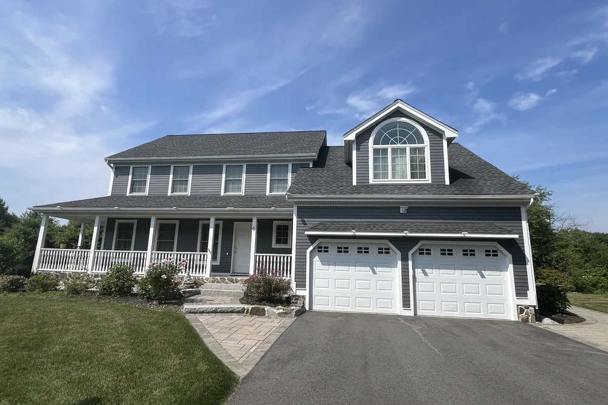
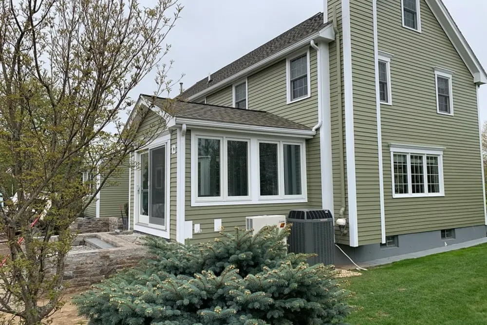
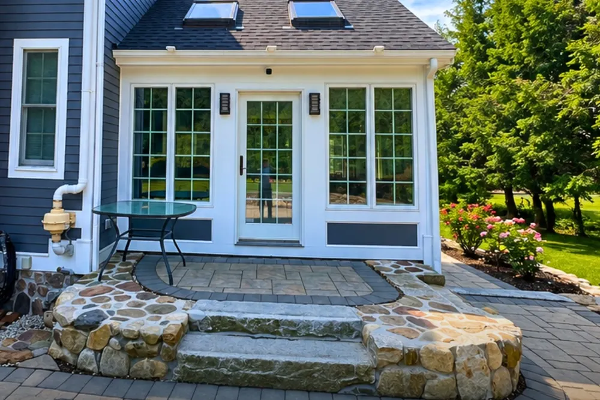
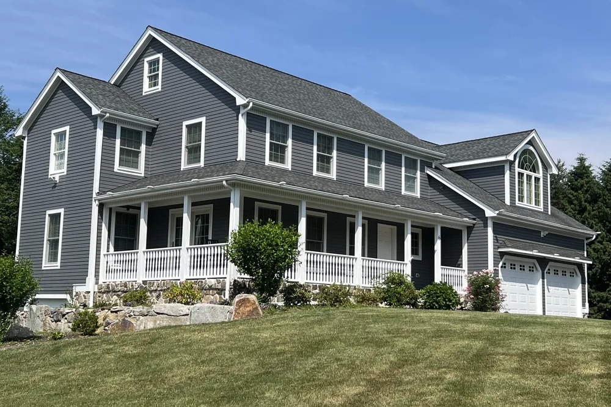
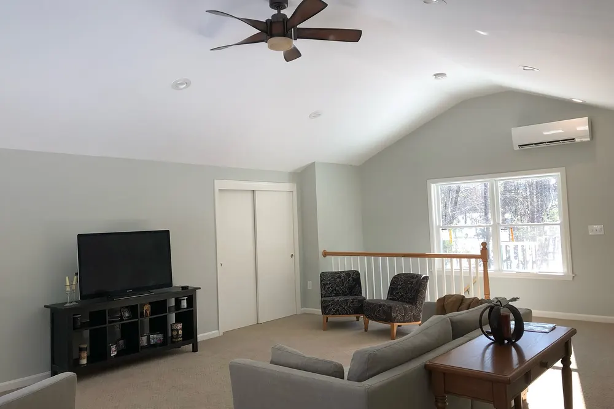
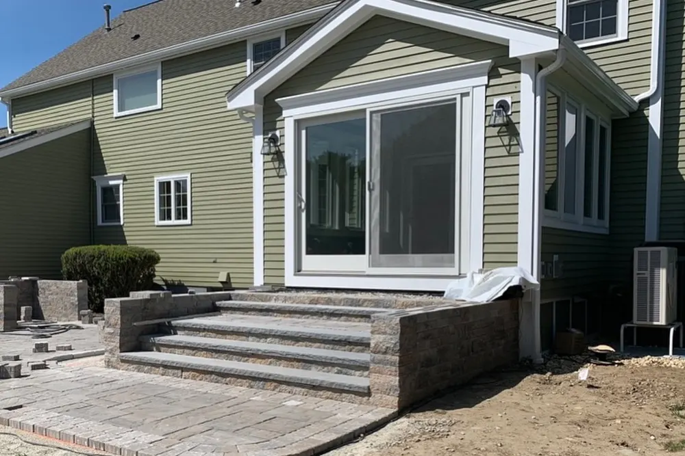
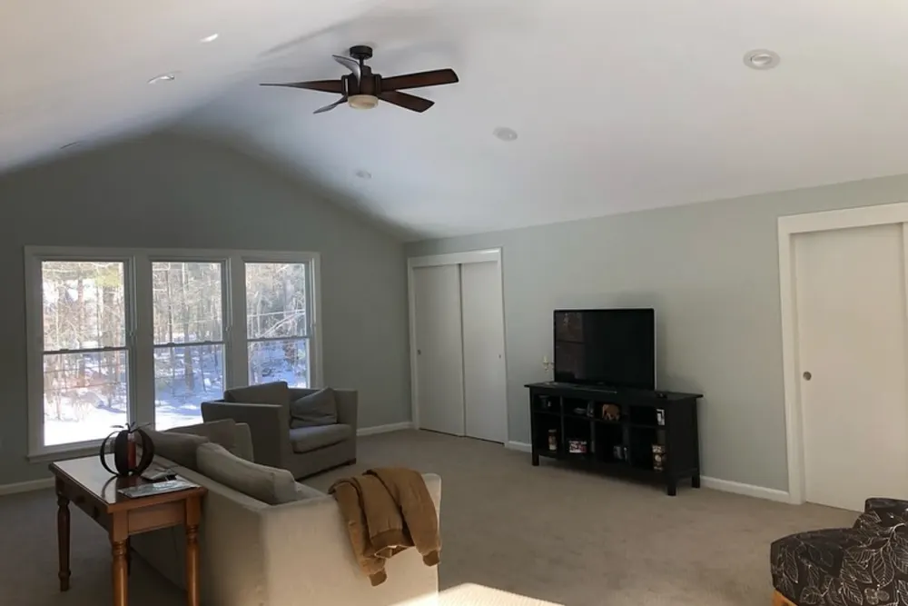
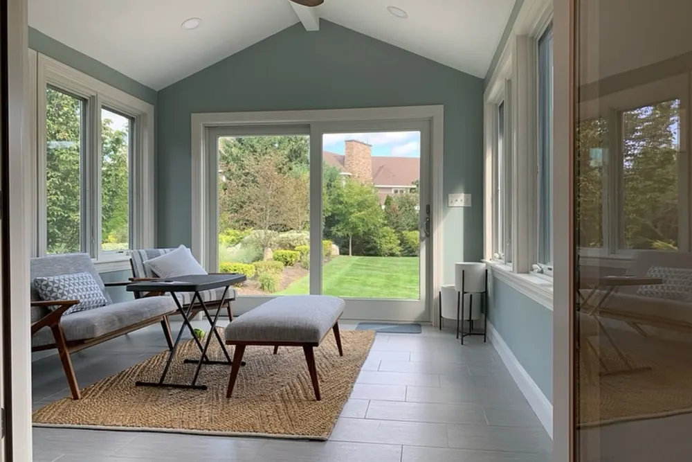
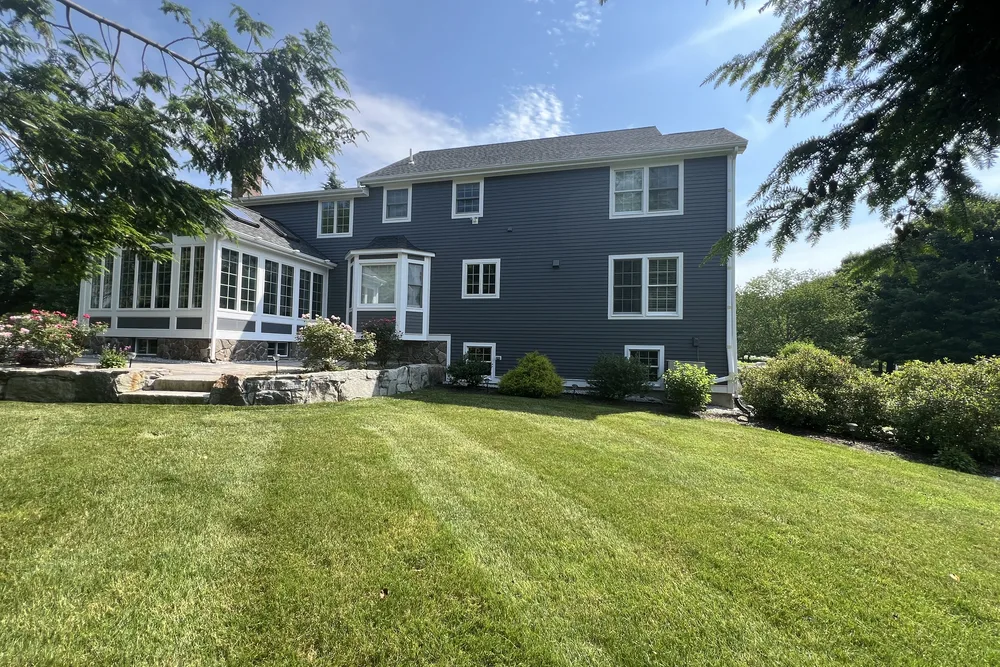

Carlisle, MA (Middlesex County)
Home Addition Contractor Carlisle MA, planned and built by DeFaria
Home Addition Contractor Carlisle MA projects start with a written plan and an owner-led walkthrough. Carlisle home addition work from DeFaria Construction is planned for Carlisle, Massachusetts lots, where septic capacity, well location and setbacks decide the size and shape of the addition before design starts.
Our work
See a real DeFaria transformation
A quick look at one of our before and after projects.
Get a Free Estimate
Local search focus
Carlisle home additions start with how the new space meets the old.

Across Carlisle Town Center, South Street area, East Street area and West Street area, Carlisle is mostly historic farmhouses and contemporary estates on two-acre wooded parcels along winding country roads. A Carlisle addition has to match the roofline, siding and structure of the existing home, so it reads as part of the house, not a box bolted on.
This page is built for Carlisle homeowners comparing home addition contractors near them. It connects the Carlisle search to project photos, neighborhoods, the full addition scope and a direct estimate path.
- Clear estimate conversations before the project starts.
- Direct communication with the homeowner from walkthrough to final walkthrough.
- Local coverage across Carlisle and the wider Middlesex County area.
Carlisle, Massachusetts
What shapes a home addition in Carlisle, MA: septic, well and setbacks

This page is for Carlisle, Massachusetts, not Carlisle, Pennsylvania. Carlisle, MA homes sit on large wooded parcels with no town water or sewer, which changes how an addition is planned.
Every home here runs on a private well and an on-site septic system. Under Massachusetts Title 5, septic design is tied to the number of bedrooms, so an addition that adds a bedroom can require a septic review or upgrade through the Board of Health before a building permit is issued. The well and the septic leach field also limit where new foundations can go, and wetlands on many wooded lots can bring in the Conservation Commission.
Design is the other half. Historic farmhouses and newer estates each need rooflines, siding and window proportions carried into the addition so it reads as part of the original house. DeFaria checks the site limits first, then designs the addition around them, and coordinates the permit with the Town of Carlisle Building Department.
- Septic and bedroom-count check under Title 5 before design
- Foundation placement planned around well, leach field and setbacks
- Conservation Commission review when wetlands are nearby
- Rooflines and exterior matched to farmhouse or estate style
Size and zoning
How big can a home addition be on a Carlisle, MA lot?

In Carlisle the lot itself sets the ceiling. Most homes sit on parcels of two acres or more, which sounds like plenty of room, but the buildable area is smaller than it looks: setbacks from the property lines, the septic system and its reserve area, the well and its protective radius, and any wetland buffer all come off the top.
That is why DeFaria starts a Carlisle addition with the site, not the floor plan. Once the usable footprint is clear, the addition can go out, up or over the garage in the spot that costs the least in foundation and utility work. On older farmhouses that often means a rear wing or an ell, a form that has been used to add space to New England houses for centuries.
Since February 2025, Massachusetts law also allows one accessory dwelling unit of up to 900 square feet by right in single-family zones, subject to local site and health rules. For Carlisle families planning space for a parent or an adult child, an attached in-law addition can now be simpler to approve, though the septic and well questions still apply.
- Buildable area mapped after setbacks, septic reserve, well and wetlands
- Rear wings and ells that suit historic farmhouses
- Attached in-law suites under the 2025 Massachusetts ADU law
- Second-story options when the footprint cannot grow
Before construction
The order of approvals for a Carlisle home addition

A Carlisle addition moves through its approvals in a set order, and knowing it up front keeps the schedule honest. First comes the site check: septic design flow, well location, setbacks and any wetlands. If a bedroom is being added, the Board of Health reviews the septic under Title 5, and a system upgrade may be part of the scope. If the work falls inside a wetland buffer, the Conservation Commission reviews it next.
Only then is the design finished and the building permit filed with the Town of Carlisle Building Department. Construction follows the same sequence as any DeFaria addition: foundation, framing and roof tie-in, weather-tight shell, rough-in, insulation and finishes, with inspections at each stage. Planning the approvals first means the crew is not waiting on paperwork once work begins.
Budget follows the same logic. On a Carlisle lot, the items that move the price most are usually the ones outside the new rooms: foundation depth and ledge, the length of the utility runs from the house, any septic upgrade, tree clearing and driveway access for equipment. DeFaria lists those separately in the estimate, so you can see what the site costs and what the addition itself costs before you commit.
- Site check: septic, well, setbacks and wetlands
- Board of Health septic review when bedrooms are added
- Conservation Commission review inside wetland buffers
- Building permit and staged inspections through construction
The scope
What a full Carlisle home addition covers

In Carlisle, historic farmhouses and contemporary estates on two-acre wooded parcels along winding country roads often add access and site constraints.
- Foundation, framing and roofline planned to tie into the existing home.
- Exterior siding, windows and trim matched so the addition blends in.
- Interior finish, electrical and plumbing coordinated with the rest of the house.
Carlisle permits and inspections run through the Town of Carlisle Building Department, and DeFaria keeps that step organized so scope and timeline stay realistic.
Cost
How much does a home addition cost in Carlisle?

For a Carlisle addition, budget around $150 to $350 per square foot, so a room addition is often $60,000 to $150,000 and a bigger build more. The estimate follows the real scope, never a flat number.
- The size and footprint of the addition.
- Whether it is a ground-level or second-story build.
- Rooflines, siding and how the exterior ties into the existing home.
- Interior finishes, plumbing and electrical the new space needs.
In Carlisle, historic farmhouses and contemporary estates on two-acre wooded parcels along winding country roads often add access and site constraints, and that can show up in the plumbing, prep and rot-repair line of the estimate.
DeFaria gives a fixed, itemized Carlisle estimate at the walkthrough, so the price matches the actual scope instead of a guess.
Process
How a Carlisle home addition runs, step by step

Most Carlisle home additions follow the same clear path, so you always know what happens next.
- Design walkthrough and an itemized estimate.
- Permitting and zoning with the town.
- Foundation, framing and structural tie-in.
- Roofing, windows and weather protection.
- Siding and trim matched to the existing exterior.
- Rough-in, insulation and drywall.
- Finish carpentry, paint and a final walkthrough.
DeFaria coordinates the Carlisle permit with the Town of Carlisle Building Department before the rough-in, and keeps you updated at each step.
Plan on about 8 to 16 weeks for a Carlisle addition once permits are in, depending on size and finish.
Materials
Materials and finishes that hold up in Carlisle additions

Because a Carlisle addition ties into the existing home, the exterior and insulation are matched and built for New England weather.
- A foundation and framing sized for the new load and tied to the home.
- Insulation and weather barriers rated for Massachusetts winters.
- Siding, roofing and trim matched to the existing exterior.
- Windows and finishes that fit the age and style of the house.
Around Carlisle Town Center and South Street area, historic farmhouses and contemporary estates on two-acre wooded parcels along winding country roads often add access and site constraints, so materials and waterproofing are matched to the home instead of picked from a generic list.
When to remodel
Signs it is time to add on in Carlisle
A few clear signs a Carlisle home is ready for an addition:
- Bedrooms or bathrooms that no longer fit the household.
- A need for a dedicated office, suite or bonus room.
- A layout that is maxed out within the current walls.
- Loving the location but needing more room.
- Investing in the home instead of buying a new one.
Older homes around Carlisle Town Center and South Street area in Carlisle show these first.
Addition Types
Home Addition Options for Carlisle Homeowners
Choosing the right type of addition in Carlisle comes down to how you live and how much land you have to work with. Room additions are the most common request, but a bump-out can solve a cramped kitchen or bathroom far more affordably than a full extension.
Second-story additions make sense for Middlesex lots where building up beats building out, and in-law suites or ADUs are growing fast for multigenerational families. We walk you through each option so the choice fits your budget and your daily routine.
In Carlisle, homeowners near Carlisle Town Center, South Street area and East Street area get a home additions scoped for the neighborhood and the Middlesex County housing it sits in, permitted through Town of Carlisle Building Department.
Every Carlisle home additions starts from the local reality. Carlisle is mostly historic farmhouses and contemporary estates on two-acre wooded parcels along winding country roads.
In Carlisle we cover Carlisle Town Center, South Street area, East Street area and West Street area, so the home additions fits the block it is on.
- Match the addition type to how you actually live
- Bump-outs cost less than a full room extension
- Build up when Middlesex lot space runs short
- ADUs suit multigenerational families needing independence
Structure First
Foundation and Structural Tie-In for Your Carlisle Addition
Every addition we build in Carlisle rests on a foundation engineered for its specific weight and use, not a generic one-size template. Second-story builds especially demand a hard look at whether the existing foundation and framing can carry the extra load.
We reinforce beams and columns where needed and stitch the new structure into the old at the roof, walls, and floor. That structural tie-in is what keeps a Middlesex addition from developing gaps, sagging floors, or leaks years down the line.
Whether the home sits near Carlisle Town Center, South Street area or East Street area, the Carlisle home additions is built for local conditions across Middlesex County and run through Town of Carlisle Building Department.
Local context shapes the work: Carlisle is mostly historic farmhouses and contemporary estates on two-acre wooded parcels along winding country roads. We plan the Carlisle home additions around exactly that.
- New footings matched to your existing foundation depth
- Frost-depth footings suited to Middlesex conditions
- Framing and load paths tied cleanly into the house
- No visible crack or gap where old meets new
Seamless Match
Matching the Addition to Your Existing Carlisle Home
Curb appeal is why matching matters, and it is one of the first things Carlisle buyers and appraisers notice. We align the new roof pitch, eave lines, and fascia with the original so the silhouette stays clean from every angle.
Siding, windows, and interior finish get the same attention. Where a Middlesex home uses aged or discontinued materials, we recommend the closest available match or a clean design break so the addition never looks like an afterthought bolted on.
From Carlisle Town Center to South Street area and East Street area, every Carlisle home additions is matched to the local housing stock in Middlesex County, with Town of Carlisle Building Department handling the permit side.
Local context shapes the work: Carlisle is mostly historic farmhouses and contemporary estates on two-acre wooded parcels along winding country roads. We plan the Carlisle home additions around exactly that.
- Rooflines and window proportions studied before design
- Addition extends the home instead of interrupting it
- Transitions planned early at logical material breaks
- Finishes blended so the join reads as intended
Permits Handled
Permits, Zoning and Setbacks in Carlisle
The fastest way to derail a Carlisle addition is to underestimate the permitting and zoning side. Carlisle permits and inspections run through the Town of Carlisle Building Department, and DeFaria keeps that step organized so scope and timeline stay realistic. We manage the submission to Town of Carlisle Building Department, schedule inspections at each phase, and keep the documentation clean.
Zoning setbacks and coverage rules shape what is even possible on your lot. Because historic farmhouses and contemporary estates on two-acre wooded parcels along winding country roads often add access and site constraints affects so many Middlesex properties, we confirm the buildable envelope before design, saving you from a plan the town will reject.
For Carlisle homes from Carlisle Town Center to East Street area, we tie the home additions to the realities of Middlesex County housing and keep Town of Carlisle Building Department in the loop on approvals.
It helps to know the housing: Carlisle is mostly historic farmhouses and contemporary estates on two-acre wooded parcels along winding country roads. The Carlisle home additions is scoped to fit it.
- Submission to Town of Carlisle Building Department handled start to finish
- Phase inspections scheduled and documented cleanly
- Buildable envelope confirmed before any plans
- Middlesex coverage rules checked to avoid rejection
Local Builder
Working With a Local Carlisle Addition Contractor
A local Carlisle contractor understands the Middlesex permitting offices, the inspectors, and the housing styles in a way an out-of-town outfit never will. DeFaria Construction is licensed, insured, and owner-led, so accountability sits with one name from the first call to the final walkthrough.
We start every job with a detailed walkthrough and hand you a fixed, itemized estimate so there are no surprises later. Most additions take about 8 to 16 weeks depending on scope and permits, and we give you a realistic timeline instead of an optimistic one.
Across Carlisle neighborhoods like Carlisle Town Center, South Street area and East Street area, we plan the home additions around how Middlesex County homes are actually built, and coordinate the local approvals with Town of Carlisle Building Department.
The Carlisle home additions is built for the neighborhood it sits in. Carlisle is mostly historic farmhouses and contemporary estates on two-acre wooded parcels along winding country roads.
- Owner-led, so Luiz is on your project directly
- Fixed, itemized estimate given at the walkthrough
- Licensed, insured, with an A+ BBB rating
- Typical build of about 8 to 16 weeks
Project photos
Home addition photos for Carlisle homeowners
The Carlisle home addition page pairs local search intent with real project photos, so visitors see the finish level before requesting an estimate.

Areas covered
Home additions across Carlisle neighborhoods
DeFaria Construction supports home addition searches across Carlisle and nearby Middlesex County towns, giving visitors enough local context to decide whether DeFaria is the right fit before they call.
Whether the home is near Carlisle Town Center, South Street area or West Street area, the Carlisle home additions is planned for the local housing stock and permitted through the Town of Carlisle Building Department.
- Carlisle Town Center
- South Street area
- East Street area
- West Street area
Reviews
What Carlisle homeowners say about DeFaria Construction
DeFaria Construction has a 5.0 rating from 15 reviews on Google. See all reviews on Google.
Extremely happy that I went with DeFaria Construction to renovate our half bathroom. What I appreciated most about working with Luiz is that him and his crew were honest, reliable and they really cared about the details that were important to me! Everyday they came as scheduled and every evening…
Luiz has been doing construction for us for close to 20 years. Large jobs are small. He does excellent work and we’re always very pleased with it. His quotes are always very reasonable. I would highly recommend him.
Very professional, efficient and thorough. They are extremely attentive to details and are fast-paced. Best contractor I’ve worked with!
Experience
Why this Carlisle page is built for real homeowners, not just keywords.
DeFaria Construction is a local, owner-led remodeling company working across Essex County and Middlesex County. With Luiz DeFaria involved directly and an A+ BBB record behind the work, the Carlisle home addition page is written around real structure, exterior tie-ins and finish coordination, not a city name dropped into a template.
DeFaria Construction is a licensed and insured local contractor with an A+ BBB rating and verified customer reviews, and every Carlisle project is owner-led by Luiz DeFaria from the first walkthrough to the final one.
"they tied the new Carlisle space into the old house cleanly, structure and finish both."
Carlisle homeowner

See what Carlisle-area homeowners say: Read DeFaria Construction reviews on Google. BBB Accredited Business with an A+ rating since March 2024, verify on BBB.
The goal is to help someone searching for Carlisle, MA home addition contractors understand the scope, the neighborhoods covered and how to start a direct conversation before requesting a free estimate.
Call (617) 893-2221 for a free estimateFAQ
Common questions about home additions in Carlisle
What home addition work does DeFaria Construction handle in Carlisle?
In Carlisle DeFaria Construction handles design, foundation, framing, roofing, exterior siding, and the interior electrical, plumbing and finish for a room or second-story addition.
How much does a home addition cost in Carlisle?
A Carlisle home addition usually runs about $150 to $350 per square foot, so a typical room addition lands between $60,000 and $150,000, and larger builds more. DeFaria gives a fixed, itemized estimate at the walkthrough.
How long does a Carlisle home addition take?
Most Carlisle home additions take about 8 to 16 weeks once permits are in, depending on size, foundation and finishes.
Will the addition match my existing Carlisle home?
Yes. DeFaria matches the roofline, siding, windows and trim so the Carlisle addition reads as part of the house, not a box added on.
Is DeFaria Construction licensed and insured?
Yes. DeFaria Construction is a licensed and insured contractor with an A+ BBB rating and verified reviews, and every Carlisle project is owner-led by Luiz DeFaria.
Does DeFaria handle Carlisle addition permits and inspections?
Yes. Carlisle permits and inspections run through the Town of Carlisle Building Department, and DeFaria keeps that step organized so scope and timeline stay realistic.
Does adding a bedroom in Carlisle, MA affect my septic system?
It can. Carlisle homes use private septic systems, and Title 5 ties septic design to bedroom count, so a bedroom addition may need Board of Health review or a septic upgrade. DeFaria checks this first.
Is this page for Carlisle, Massachusetts?
Yes. It covers Carlisle, MA in Middlesex County. DeFaria Construction works in Massachusetts only, not in Carlisle, Pennsylvania.